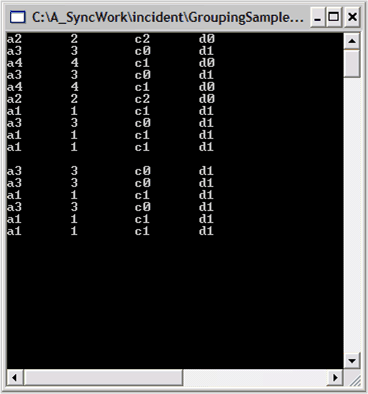
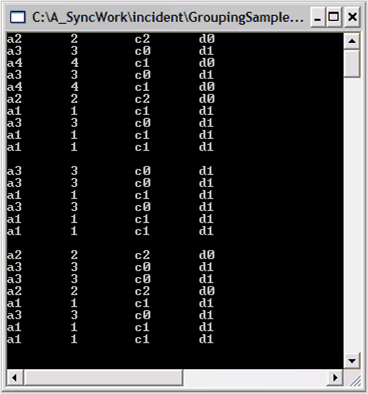

Another collection that is part of the schema information in the Engine.TableDescriptor is the RecordFilters collection. This collection lets you filter the data to see only the items that are in your data list and that satisfy the criteria that is specified. You can express the criteria as a logical expression using the property names, algebraic, and logical operators. You can also use LIKE, MATCH, and IN operators.
1 In the Console Application used in lessons 1 and 2, comment out all the code that is in the Main method and add the following code to create a data object and set it into the Grouping Engine.
|
[C#]
static void Main(string[] args) { // Create an arraylist of random MyObjects. ArrayList list = new ArrayList(); Random r = new Random();
for(int i = 0; i < 10; i++) { list.Add(new MyObject(r.Next(5))); }
// Create a Grouping.Engine object. Engine groupingEngine = new Engine();
// Set its datasource. groupingEngine.SetSourceList(list); } |
|
[VB.NET]
Sub Main()
' Create an arraylist of random MyObjects. Dim list As New ArrayList() Dim r As New Random()
Dim i As Integer For i = 0 To 10 list.Add(New MyObject(r.Next(5))) Next
' Create a Grouping.Engine object. Dim groupingEngine As New Engine()
' Set its data source. groupingEngine.SetSourceList(list) End Sub |
2 You are now ready to apply a filter to the data. Say for example you want to see only those items whose property D has the value d1. You must observe that D is a string that has non-numeric values. So, in this case you will need to use one of the string comparison operators (LIKE or MATCH) in your filter condition.
3 To add a filter condition, you will need to add a RecordFilterDescriptor to the Engine.TableDescriptor.RecordFilters collection.
Do the following steps:
1. List the data before the filter.
2. Apply the filter by creating a RecordFilterDescriptor.
3. Add it to the RecordFilters collection.
4. List the filtered data.
 Note: To list the data, instead of accessing the
Table.Records collections, you were using the Table.FilteredRecords collections.
The FilteredRecords collection only includes the records that satisfy all
filters in the RecordFilters collection. Add this code at the end of the Main
method.
Note: To list the data, instead of accessing the
Table.Records collections, you were using the Table.FilteredRecords collections.
The FilteredRecords collection only includes the records that satisfy all
filters in the RecordFilters collection. Add this code at the end of the Main
method.
4 Note that the constructor on the RecordFilterDescription takes an expression, "[D] LIKE 'd1'". This expression will be True only for those items in the list where property D has the value d1.
|
[C#]
// Display the data before filtering. foreach(Record rec in groupingEngine.Table.FilteredRecords) { MyObject obj = rec.GetData() as MyObject; if(obj != null) { Console.WriteLine(obj); } }
// Pause Console.ReadLine();
// Filter on [D] = d1 RecordFilterDescriptor rfd = new RecordFilterDescriptor("[D] LIKE 'd1'"); groupingEngine.TableDescriptor.RecordFilters.Add(rfd);
// Display the data after filtering. foreach(Record rec in groupingEngine.Table.FilteredRecords) { MyObject obj = rec.GetData() as MyObject; if(obj != null) { Console.WriteLine(obj); } }
// Pause Console.ReadLine(); |
|
[VB.NET]
' Display the data before filtering. Dim rec As Record For Each rec In groupingEngine.Table.FilteredRecords Dim obj As MyObject = CType(rec.GetData(), MyObject) If Not (obj Is Nothing) Then Console.WriteLine(obj) End If Next rec
' Pause Console.ReadLine()
' Filter on [D] = d1 Dim rfd As New RecordFilterDescriptor("[D] LIKE 'd1'") groupingEngine.TableDescriptor.RecordFilters.Add(rfd)
' Display the data after filtering. For Each rec In groupingEngine.Table.FilteredRecords Dim obj As MyObject = CType(rec.GetData(), MyObject) If Not (obj Is Nothing) Then Console.WriteLine(obj) End If Next rec
' Pause Console.ReadLine() |

Figure 17: Screen Showing the Initial Data Followed by the Same Data Filtered on [D] LIKE 'd1'
5 You can apply more complex filters. Here is the code that will remove any existing filters and filter the property D being d1 or property b equal 2. Note here that since you expect property B to display only numeric data you must use the = operator in the comparison.
|
[C#]
groupingEngine.TableDescriptor.RecordFilters.Clear();
rfd = new RecordFilterDescriptor("[D] LIKE 'd1' OR [B] = 2"); groupingEngine.TableDescriptor.RecordFilters.Add(rfd);
// Access the data directly from the Engine. foreach(Record rec in groupingEngine.Table.FilteredRecords) { MyObject obj = rec.GetData() as MyObject; if(obj != null) { Console.WriteLine(obj); } }
// Pause Console.ReadLine(); |
|
[VB.NET]
groupingEngine.TableDescriptor.RecordFilters.Clear()
rfd = New RecordFilterDescriptor("[D] LIKE 'd1' OR [B] = 2") groupingEngine.TableDescriptor.RecordFilters.Add(rfd)
' Access the data directly from the Engine. For Each rec In groupingEngine.Table.FilteredRecords Dim obj As MyObject = CType(rec.GetData(), MyObject) If Not (obj Is Nothing) Then Console.WriteLine(obj) End If Next rec
' Pause Console.ReadLine() |

Figure 18: Screen Showing Data Filtered on [D] LIKE 'd1' OR [B] = 2
Filtering is applied to the data displayed in the console.